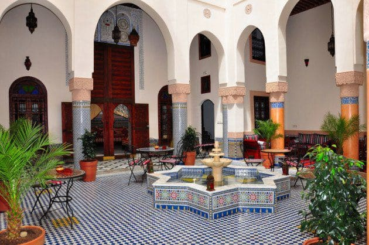
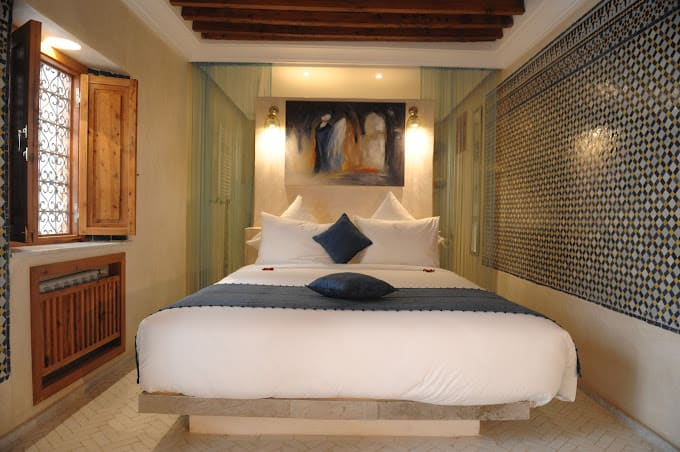
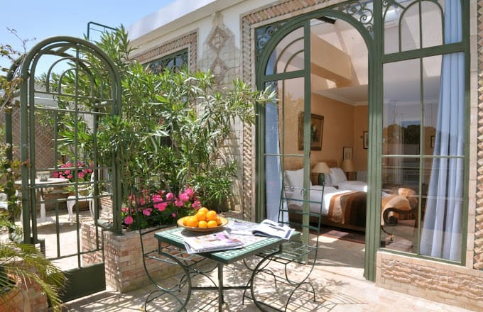
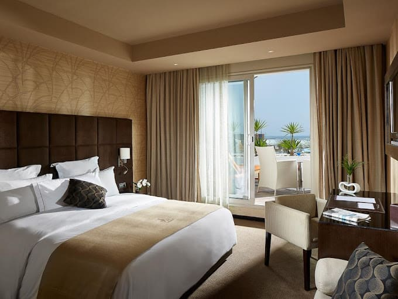

The short answer: Choose a riad if you want character, intimacy and a location inside the old medina. It's the most memorable way to stay in Marrakech, Fes or Chefchaouen. Choose a hotel if you need an elevator, larger rooms, a big pool, car access to the door or the facilities of a full resort. Many of the best Morocco trips combine both: riads in the old cities, boutique or kasbah hotels on the road south, and a comfortable camp in the Sahara.
Where you stay in Morocco shapes the whole feel of the trip. A riad wraps you in tradition: you step from a crowded lane through a heavy wooden door into a quiet courtyard of tile, plaster and orange trees. A hotel gives you space, facilities and predictability. Neither is always better. It depends on who you are, who you're traveling with and which city you're in. Here's how to decide.
What Exactly Is a Riad?
A riad (from the Arabic for "garden") is a traditional Moroccan house built around an inner courtyard, historically with a garden or fountain at its center. From the street, riads look like plain walls with a single door. All the beauty faces inward. Many have been restored as small guesthouses and boutique hotels, often with just three to fifteen rooms, a rooftop terrace and sometimes a small pool or hammam. A dar is a similar townhouse, usually with a smaller courtyard and no garden.

Riad vs. Hotel at a Glance
| Riad | Hotel | |
|---|---|---|
| Atmosphere | Intimate, traditional, personal | Spacious, consistent, often international |
| Location | Inside the medina, walking distance to sights | Often outside the old city, or in modern districts |
| Car access | Usually a short walk from the nearest road | Usually to the door |
| Rooms | Few, each different, sometimes smaller | Many, larger and standardized |
| Stairs and elevators | Often steep stairs, rarely elevators | Elevators are standard |
| Facilities | Roof terrace, small pool or hammam | Pools, spas, gyms, restaurants |
| Service | Personal; staff know you by name | Professional; more formal |
| Noise | Quiet inside, but the call to prayer and medina life carry | Usually well insulated |
When a Riad Is the Better Choice
- Couples and honeymooners, for whom intimacy and atmosphere matter most. See our Morocco honeymoon guide.
- Travelers who want to be in the heart of the medina, to walk out at dusk and be in the souks in minutes.
- First-time visitors who want the "real Morocco" experience.
- Small groups of friends, who can sometimes book a whole riad between them.

When a Hotel Is the Better Choice
- Travelers with limited mobility, for whom stairs and medina walking are hard. See our guide to Morocco for seniors.
- Families with young children who need space, a large pool and fewer hazards such as open courtyards and low terrace walls. See our family guide.
- Light sleepers, since the dawn call to prayer can be heard in most medinas.
- Travelers who want resort facilities, such as a large spa, several restaurants or a gym.

Riad or Hotel, City by City
Marrakech
Riads are the classic choice, and there are hundreds in the medina. Choose one within easy walking distance of a road, especially if you arrive with luggage. Larger resort hotels in the Hivernage district or the Palmeraie suit families and travelers who want space. Our Jemaa el-Fnaa guide helps you understand the medina's layout.
Fes
Fes has some of Morocco's most spectacular riads, including restored palaces with intricate zellige and carved cedar. The medina is large and hilly, so location and access matter even more here. See our Fes medina guide.
Chefchaouen
Small riads and boutique hotels with mountain views. Hotels at the edge of the old town offer easier access and, sometimes, pools with views over the blue lanes. Read our Chefchaouen guide.
The road to the Sahara
Between Marrakech and the desert, kasbah-style hotels and boutique hotels in the Dades Valley and Skoura Oasis are the norm. They're spacious, often with pools and big views.
The Sahara
Neither: you'll stay in a desert camp. The difference between camps is enormous, so ask about private bathrooms and real beds. See our luxury travel guide and desert camp guide.
Essaouira and the coast
Riads within the walled medina, many with ocean-view rooms or terraces, or seafront hotels with more space.

How to Choose a Good Riad
- Location and access first: how far is it from the nearest car drop-off, and is the walk flat or stepped?
- Room position: ground floor or upper floors, and how many stairs?
- Climate control: air conditioning for summer and heating for winter. Old stone houses can be cold in January.
- Bathrooms: private en-suite bathrooms are standard in good riads, but check.
- Size: the smallest riads are the most intimate. Slightly larger ones may have a pool and spa.
- Recent reviews mentioning noise, cleanliness and service.
Once you've chosen, our riad etiquette guide explains what to expect on arrival.
The Best of Both: Mixing Riads and Hotels
On our private journeys we usually combine accommodation types: riads in Marrakech and Fes, a boutique or kasbah hotel on the road south, and a camp in the Sahara. Each property is chosen for its location and comfort, and any of them can be swapped or upgraded if you prefer something different, such as a hotel with an elevator instead of a riad. Tell us what matters to you when you enquire, or explore our tailor-made trips.